Maximising discovery in high-throughput proteomics experiments with power aware R packages
Statistical thinking for better experiments
Roadmap
Power analysis · peppwR · pepdiff
- the classical recipe and where it runs out
- power analysis for high-throughput, skewed, missing data
- the analysis end of the same workflow
Power analysis
The chance our experiment can finding something given that it is there.
What “power” actually means
In a test of \(H_0\) vs \(H_1\), power is the probability of correctly rejecting \(H_0\) when \(H_1\) is true.
\[
\begin{aligned}
\text{Power} &= \Pr(\,\text{reject } H_0 \mid H_1\,) \\
&= 1 - \beta
\end{aligned}
\]
- \(\alpha\) — false-positive rate (we choose this; conventionally \(0.05\))
- \(\beta\) — false-negative rate (we do not choose this directly)
Power contextualised
\[
\text{power} = 1 - \beta
\]
An experiment with power \(0.3\) misses 70% of real effects of the size it was designed to detect.
The four levers
- \(\delta\) — true difference in means
- \(\sigma\) — within-group SD
- \(n\) — sample size per group
- \(\alpha\) — significance threshold
Two curves, low power and high power
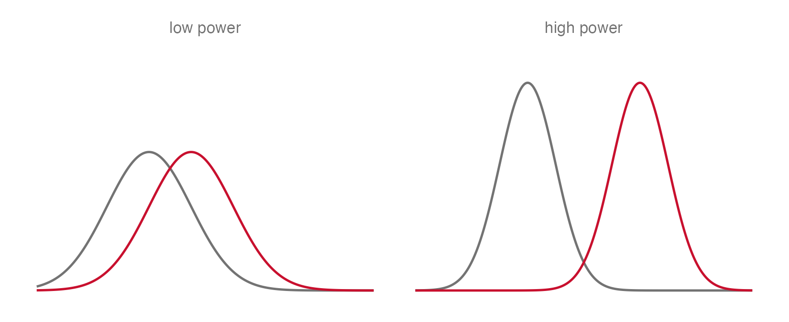
- Pull apart (\(\delta\)), narrow down (\(\sigma\)), or sample more (\(n\)) shrink the overlap, increase power.
- \(\alpha\) changes false positive rate
\(p\) is not power
\(p\) is not power, and a small \(p\) does not measure how real an effect is.
What \(p\) actually is
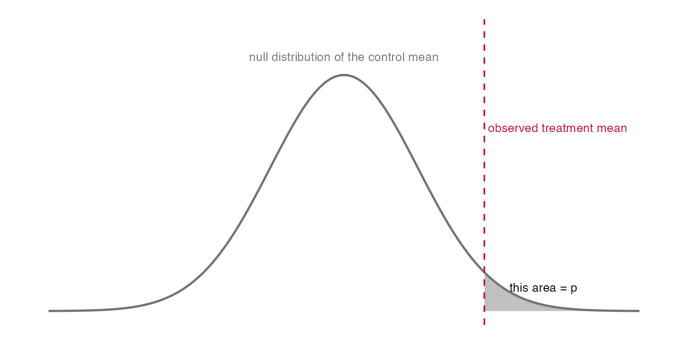
How often would the control alone produce a mean this extreme?
Standardising size of differences for comparison
Cohen’s \(D = \delta / \sigma\)
| 0.2 |
small |
| 0.5 |
medium |
| 0.8 |
large |
- Mean difference, in units of SD.
- Guiding numbers, not hard rules.
The classical power curve
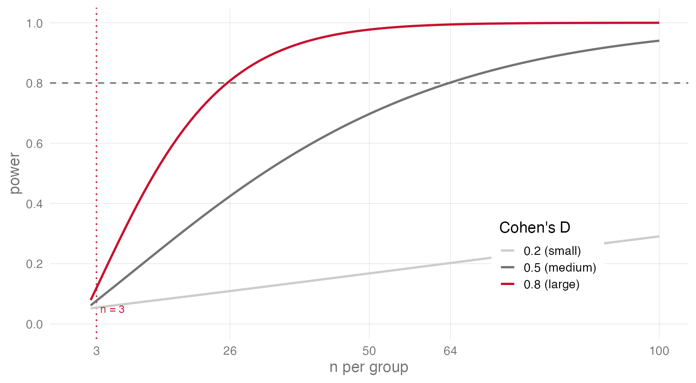
Is my old experiment worthless?
Almost certainly not.
- A small-\(n\) comparison that returned a clear effect is still the data it always was.
- High-throughput experiments quietly omit large fractions of true biology when underpowered.
Decide \(n\) before the experiment
- Choose target — power (e.g. \(0.8\)) and \(\alpha\) (e.g. \(0.05\))
- Estimates of \(\delta\) and \(\sigma\) needed - use pilot data or literature
- Solve for \(n\) (e.g using
pwr.t.test() )
- Run the experiment with that biological \(n\) as planned
Run a power calculation before you waste time and money.
Standard tests fail on many high-throughput data types
Can’t assume normally distributed, complete data.
peppwR
Power analysis for high-throughput, skewed, missing data.
Simulation in place of the closed form.
Start with the data not an assumption
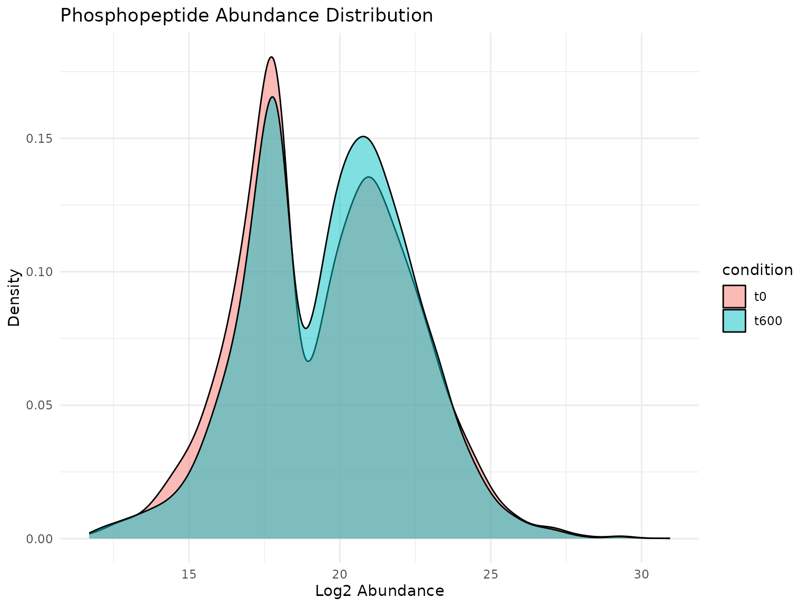
Example peptide abundance from DDA experiment in Arabidopsis
Candidate distribution families
- Gamma — continuous, positive, right-skewed; shape and rate
- Lognormal — variable whose logarithm is normal; multiplicative processes
- Inverse Gaussian — positive, right-skewed; intermediate tail behaviour
Picking between families: AIC
\[\text{AIC}_k = -2 \log L_k + 2 p_k\]
- \(L_k\) is the maximised likelihood of model \(k\)
- \(p_k\) its number of parameters
- Smallest AIC wins
Fitting per peptide: fit_distributions()
fits <- fit_distributions(
pilot_data,
id = "peptide",
group = "condition",
value = "abundance"
)
plot(fits)
A peppwr_fits S3 object with print, plot, summary methods.
Assessing whether missingness is random
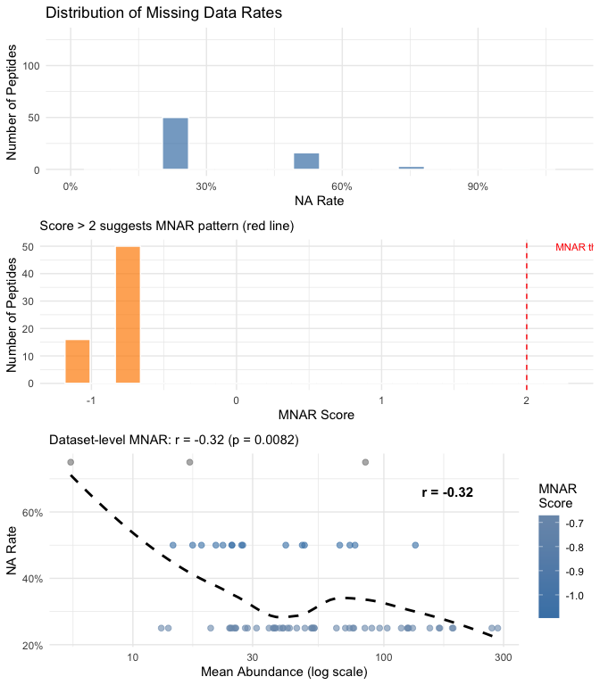
MNAR vs MCAR
- MNAR — Missing Not At Random. Probability of missingness depends on the value itself.
- MCAR — Missing Completely At Random. Probability of missingness is independent of the value.
Pretending MCAR overstates what the experiment can detect.
peppwR detects MNAR at the dataset level
- Compute per-peptide mean abundance and per-peptide NA rate.
- Take the Spearman correlation between them.
- Significantly negative \(\rightarrow\) flag dataset as MNAR.
The simulation recipe, one peptide at a time
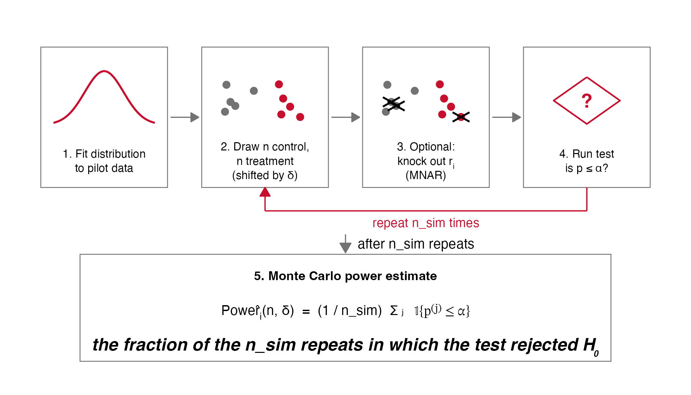
Monte Carlo power
powerful counting
\[\hat\pi_i(n, \delta) \;=\; \frac{1}{n_\text{sim}} \sum_{j=1}^{n_\text{sim}} \mathbf{1}\!\left[p^{(j)} \leq \alpha\right]\]
- \(\mathbf{1}[\cdot]\) is the indicator function.
- Same \(n, \delta, \alpha\) as before (\(\sigma\) enters implicitly through the fitted distribution)
Three tests inside the engine
- Wilcoxon rank-sum — rank-based two-sample comparison (default)
- Bootstrap-\(t\) — resampling variant of the two-sample \(t\)-test
- Bayes-factor \(t\)-test — ratio of marginal likelihoods under \(H_1\) and \(H_0\)
What peppwR can tell you
find = "sample_size"
- given \(\delta, \sigma, \pi_\text{target}\), find smallest \(n\)
find = "power"
- given \(n, \delta, \sigma\), return \(\hat\pi\)
find = "effect_size"
- given \(n, \sigma, \pi_\text{target}\), return smallest detectable \(\delta\)
result <- power_analysis(
fits,
effect_size = 2,
n_per_group = 6,
find = "power",
n_sim = 500
)
The peptidome power
\[P_\text{peptidome}(n, \delta, \pi_\text{target}) \;=\; \frac{1}{K}\sum_{i=1}^{K} \mathbf{1}\!\left[\hat\pi_i(n, \delta) \geq \pi_\text{target}\right]\]
- \(K\) is the number of peptides
- “X% of peptides reach 80% power at \(n = Y\)”
When per-peptide fitting fails
"exclude" (default) — drop the peptide, report the count."empirical" — resample empirically from observed values."lognormal" — substitute a moment-matched lognormal.
Configured via on_fit_failure.
fits <- fit_distributions(
pilot_data,
id = "peptide",
group = "condition",
value = "abundance",
on_fit_failure = "empirical"
)
Aggregate mode: no pilot data
result <- power_analysis(
distribution = "gamma",
params = list(shape = 2, rate = 0.05),
effect_size = 2,
target_power = 0.8,
find = "sample_size",
n_sim = 5000
)
Returns \(n^\ast = 25\) per group.
Making power curves: aggregate-mode power curve
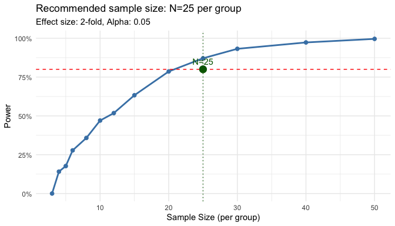
Multiple testing
At \(\alpha = 0.05\) across \(5{,}000\) tests,
expected false positives under the null = \(250\).
Not a usable workflow
Benjamini–Hochberg
\[p_{(k^*)} \;\leq\; \frac{k^*\, \alpha}{m}\]
- Ordered \(p\)-values \(p_{(1)} \leq \cdots \leq p_{(m)}\).
- Find the largest rank \(k^*\) satisfying the inequality
- Reject every hypothesis with \(p \leq p_{(k^*)}\).
FDR-aware power: apply_fdr = TRUE
Power under BH
- Simulate a full peptidome (true positives + nulls).
- Apply BH.
- Count true positives among the discoveries.
- Repeat.
prop_null = 0.9 by default — most peptides do not respond.
Worked example: DDA Arabidopsis
\(2{,}228\) phosphopeptides, two timepoints, three biological replicates per timepoint.
- \(n = 3\) per group
- Two-fold effect
- Bayes-factor test
Per-peptide power distribution
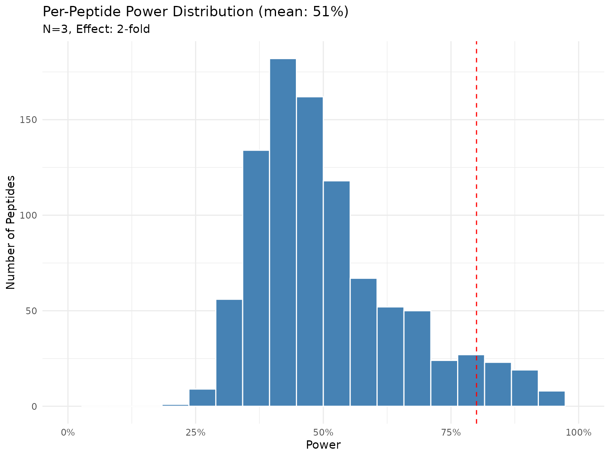
What \(n\) would reach half-peptidome 80% power?
\(n = 15\) per group.
Roughly five times the discovery norm of three.
pepdiff
The same data, from the other end.
Differential abundance for phosphopeptides.
The workflow at a glance
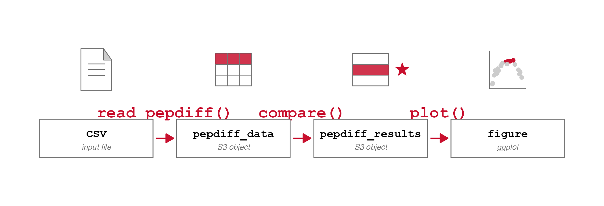
Reading the data
dat <- read_pepdiff(
file = "phospho_intensities.csv",
id = "peptide",
gene = "gene_id",
value = "value",
factors = c("treatment", "timepoint"),
replicate = "bio_rep"
)
Returns a pepdiff_data S3 object with print, summary, plot methods.
Exploratory triptych
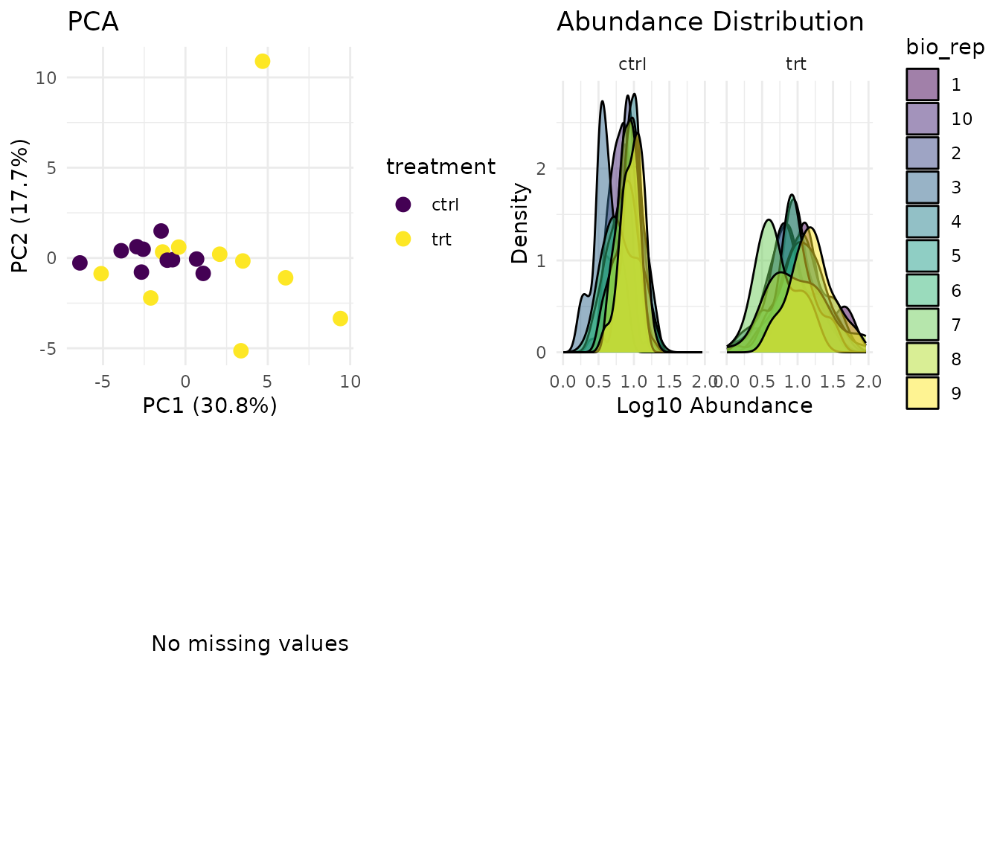
plot() on a pepdiff_data object — diagnostics before any model is fitted.
Why fit a model at all?
Helps calculate how big the change is, and how likely it is given a null
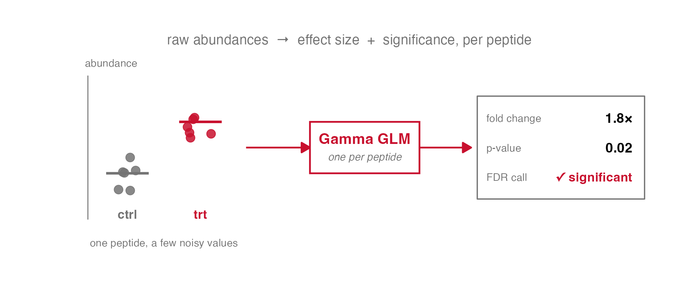
Really, it’s just a regression
The slope is the change. The scatter around the line is the confidence.
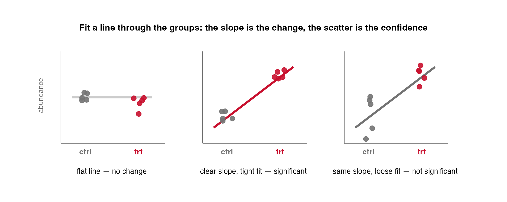
The per-peptide gamma GLM
\[Y_{ij} \;\sim\; \text{Gamma}(\mu_{ij}, \phi_i)\]
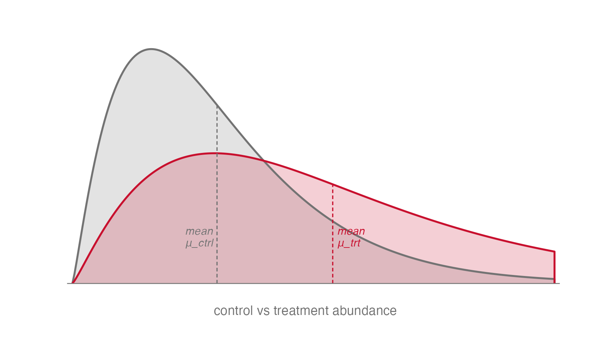
- The treatment moves the curve’s mean abundance,
- \(\mu_\text{ctrl}\!\rightarrow\!\mu_\text{trt}\).
What a gamma GLM gives us
- A \(p\)-value we can trust — it describes each peptide’s own skewed scatter, so the null is the right one.
- The effect as a fold change — treatment vs control, the number you’d actually report.
Contrasts via emmeans
- Treatment minus control at a fixed timepoint.
- Treatment \(\times\) timepoint interaction.
- Marginal effect of treatment averaged over timepoints.
Extracted via the emmeans package — R’s standard tool for estimated marginal means and contrasts.
Running the comparison
results <- compare(
dat,
compare = "treatment",
ref = "ctrl",
method = "glm"
)
Returns a pepdiff_results object.
Check the GLM fits
plot_fit_diagnostics()
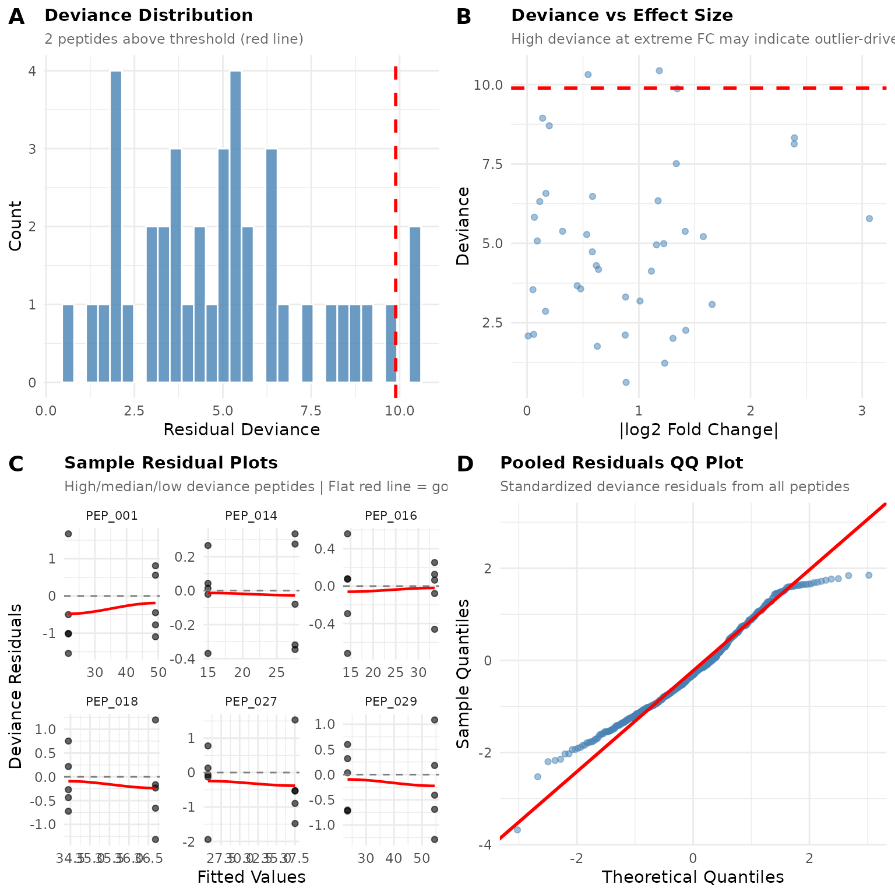
When to switch
- Below ~10–15% high-deviance peptides + roughly linear QQ \(\rightarrow\) keep the gamma GLM.
- Above ~15% high-deviance, or systematic curvature \(\rightarrow\) switch to ART.
Running ART
results_art <- compare(
dat,
compare = "treatment",
ref = "ctrl",
method = "art"
)
Pairwise tests for simpler designs
method = "pairwise"
- Wilcoxon — documented default for small-\(n\), non-normal, outlier-prone data.
- Bootstrap-\(t\) — four or more replicates, roughly symmetric data.
- Bayes-factor \(t\)-test — evidence strength; useful when “no detectable effect” is the finding.
- Rank-products — sensitive to small effects whose direction is consistent across replicates.
Match the test at both stages
wilcoxon |
wilcoxon |
bootstrap_t |
bootstrap_t |
bayes_t |
bayes_t |
|
rank_products |
Power for the test you will actually run.
Reading the output
plot(pepdiff_results)
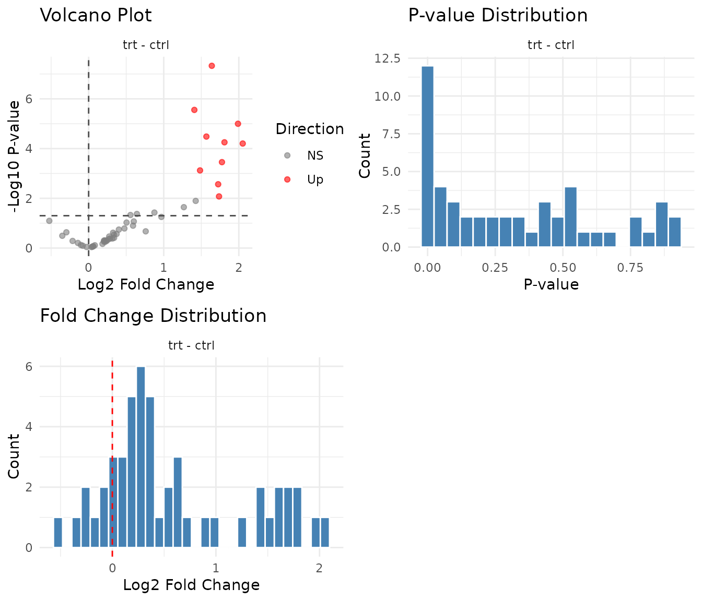
The \(p\)-value histogram is diagnostic of tests
- Flat base + spike near zero — well-calibrated test, mix of nulls and alternatives.
- U-shape — something upstream of FDR is mis-specified.
- Spike at one or non-flat baseline — wrong family, unmodelled batch effect, normalisation problem.
Filtered output
Returns the filtered peptide list, ready to join onto gene annotations or pipe into enrichment.
Takeaways
- Most experiments are underpowered — and an underpowered run quietly misses real effects, whole swathes of them at scale.
- Decide sample size before you start — power belongs to the design, and the \(n=3\) habit is usually far too small.
- Real data breaks the textbook \(t\)-test — skew, missing values and thousands of tests need simulation, not a closed-form formula.
- Match planning to analysis — plan power with peppwR, call differences with pepdiff, using the same test at both ends.
Questions?
peppwR
https://cran.r-project.org/package=peppwR https://teammaclean.github.io/peppwR/
pepdiff
https://cran.r-project.org/package=pepdiff https://teammaclean.github.io/pepdiff/